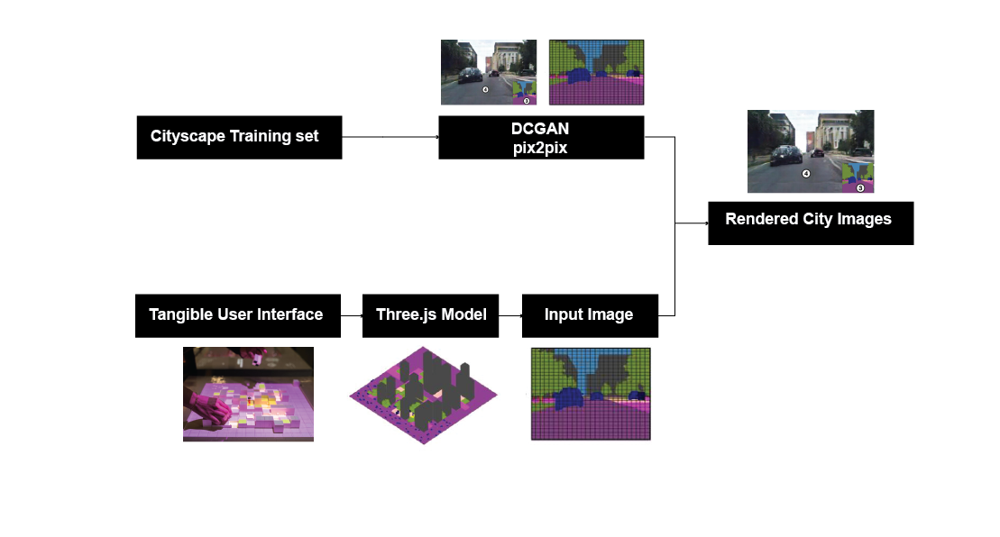

Background: The emergence and prevalence of large language modes ChatGPT and DALL.E2 bring opportunities for improving productivity and raise ethical concerns. In this study, I want to investigate how the use of AI in cartography can lead to ethical problems such as misinformation, unanticipated features, and so on so forth.
How it engages meaningfully with computation:
(1) to raise public awareness of the consequences of misuse of AI.
(2) understand the logic of how large AI models generate Maps.
(3) Find out ways to distinguish “human-made” maps from AI-generated maps.
Background: The emergence and prevalence of large language modes ChatGPT and DALL.E2 bring opportunities for improving productivity and raise ethical concerns. In this study, I want to investigate how the use of AI in cartography can lead to ethical problems such as misinformation, unanticipated features, and so on so forth.
How it engages meaningfully with computation:
(1) to raise public awareness of the consequences of misuse of AI.
(2) understand the logic of how large AI models generate Maps.
(3) Find out ways to distinguish “human-made” maps from AI-generated maps.
Research Question: Can we measure Urban Vitality with Data? What data can reflect urban vitality? And What urban environmental factors have an influence on urban vitality. How to use measurable factors to generate vital urban blocks.
How it engages meaningfully with computation:
It leverages and explores the ability of computation to transform abstract qualities, such as "vitality", into metrics that can be quantified numerically, and further applied in generative design. Through computation, we can not only evaluate the vitality of a city but also optimize and design urban blocks with enhanced vitality based on these quantified data.
How it engages meaningfully with computation: It utilizes the dynamic and interactive nature of computation, as a bridge to the gap between the public and the professionals. It allows more stakeholders with no design experience to get more engaged in the planning process.
